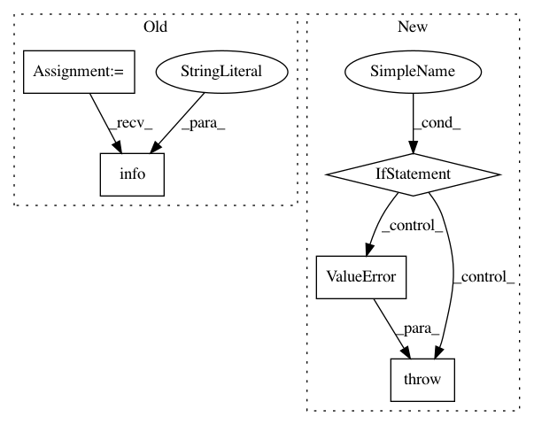

34b73753f2967bf8a824fa0b869a992c86cdbaba,Orange/classification/logistic.py,LogisticRegressionLearner,fit,#LogisticRegressionLearner#Any#Any#Any#,31
Before Change
theta, cost, ret = fmin_l_bfgs_b(
self.cost_grad, theta, args=(X, Y.ravel()), **self.fmin_args)
if ret["warnflag"] != 0:
logging.info("L-BFGS failed to converge")
return LogisticRegressionClassifier(theta, self.normalize, self.mean, self.std)
class LogisticRegressionClassifier(classification.Model):
After Change
raise ValueError("Logistic regression does not support "
"multi-label classification")
if np.isnan(np.sum(X)) or np.isnan(np.sum(Y)):
raise ValueError("Logistic regression does not support "
"unknown values")
self.mean = np.mean(X, axis=0)
self.std = np.std(X, axis=0)
if self.normalize:
X = (X - self.mean) / self.std
In pattern: SUPERPATTERN
Frequency: 3
Non-data size: 5
Instances
Project Name: biolab/orange3
Commit Name: 34b73753f2967bf8a824fa0b869a992c86cdbaba
Time: 2013-06-03
Author: jure.zbontar@gmail.com
File Name: Orange/classification/logistic.py
Class Name: LogisticRegressionLearner
Method Name: fit
Project Name: tensorflow/models
Commit Name: 2d34259281a6251cbdc67103ce8a1310010b8ceb
Time: 2020-10-05
Author: dhr@google.com
File Name: orbit/controller.py
Class Name: Controller
Method Name: __init__
Project Name: cmu-db/ottertune
Commit Name: 8eb79c3cc4f7910d9ae0ef0edfe6fd3d6e08f030
Time: 2020-03-19
Author: dvanaken@cs.cmu.edu
File Name: server/website/website/db/base/parser.py
Class Name: BaseParser
Method Name: convert_dbms_metrics